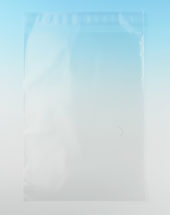

紙封筒と透明ビニール封筒 反応率が良いのは？
質問
東京で建築系のコンサルタントをしています。
クライアントが定期的に角2サイズ紙封筒を使ってDMを出しています。
実はそのクライアントから、現在の紙封筒と透明のビニール封筒を
使った時にどちらの反応が良いか、質問を受けています。
私はビニール封筒の反応が良いと思うのですが
はっきりしたことは言えません。
この件につきまして豊田さんのデータがありましたら
教えてもらえないでしょうか?
宜しくお願いします。
回答

結論から言うと、やり方次第という事になるのですが、
これでは答えにならないので、実験データがありますので
参考にしてください。
実験データ
封筒は材質や大きさ、そして、封筒に書く内容によって、
開封率が大きく変わります。
そこで、当社で、コンサルタントの方や、お客さんに協力をしていただき、
1、封筒の大きさ 長3封筒(A4の紙を3つ折り封入)と角2封筒(A4サイズが折らずに入る)の比較
2、材質 角2封筒は紙とA4透明ビニール封筒の比較
3、封筒に書く内容 差出人のみを書いた角2紙封筒と
A4透明封筒に差出人とキャッチコピー等を書いたものの比較
をアンケート回収の封筒を出し、何回か実験しました。
実験結果
1では約110%～140%で角2封筒の回収率が良く
2ではどちらともいえませんでした。
3では「A4透明封筒に差出人とキャッチコピー等を書いたもの」が最大3.6倍、反応率ＵＰでした。
以上のことから
封筒の大きさはＡ４サイズの紙がおらずに入る封筒
封筒にはお客さんのメリットになる内容を書く
という事が言えると考えられます。
結果まとめ
角2紙封筒の場合はお客様が開けたくなる内容を印刷する。
Ａ4透明封筒の一番上にくる紙に、お客様が開けたくなる内容を印刷した紙を入れる。
裏面も透明なのでこちらから見た場合も、お客さんが開けたくなるキャッチを入れる。
コスト的に見ると
通常は紙封筒に印刷するよりもＡ４用紙に印刷したほうが安くなります。
ＤＭテストを積み重ねる必要がある場合は、キャッチコピーなどの印刷を変える必要があるので
Ａ４透明封筒に毎回印刷内容を変えて印刷したＡ４用紙を入れ、印刷したほうが安くつきます。
テストDMを行うときには
DMテストを行うときには
紙封筒でテストを行う場合には透明封筒を使うほうが有利です。
理由は
・封筒金額は透明封筒のほうが安い
・紙封筒に印刷すると印刷代が高い
・透明封筒の表面と裏面に入れる紙でキャッチなどを変えられる
・封筒の表面裏面のA4用紙の前にA5用紙・２行箋を入れることができる
特別な事情がない場合は透明封筒でのテストがお勧めです。
透明封筒にも材質が2種類ある
あまり知られていませんが透明封筒の材質は2種類あります。
・OPP（Oriented PolyPropylene）
・CPP（Cast polypropylene films）
それぞれ特徴がります。
| OPP封筒 | CPP封筒 | |
|---|---|---|
| 透明度 | 透明 | OPPより若干悪い（会社により差があり） |
| 破れやすさ | 破れやすい | 破れにくい |
| DMで使用する場合 | 用紙などを入れるとき | 小冊子・サンプルを入れるとき |
| 運送途中の破れ | 配達途中で破れることがある | なし |
| 運送途中の傷 | つきやすい（印象が悪くなる） | つきにくい |
| 寒さ | ０℃で割れる | 製造会社によりOPPより強い |
| 価格 | 安い | 若干高い |
DM発送者はあまり気づきませんが受け取ったときに
・破れ
・傷
・中身の破損
・汚れ
などは思いのほか印象を悪くします。
透明封筒を使うときに注意が必要なことは
・配送途中に温度が０度以下になるときには注意（約マイナス５度まで耐えられるものあり）
・運送途中に上の荷物と下の荷物に挟まれて破れることがある
・小冊子やサンプルなど厚みのあるものは（CPPを使用）
DMを安く送る方法 関連ページ
他によく読まれているページ
・ＤＭ作成前に知っておきたいことベスト１０
・DMの開封率を上げる方法
・ＤＭの反応率は
・うまくいっている業界･業種
・A4サイズ紙でハガキを
前の記事
020_どのお客さんにＤＭを送れば一番効果的ですか？